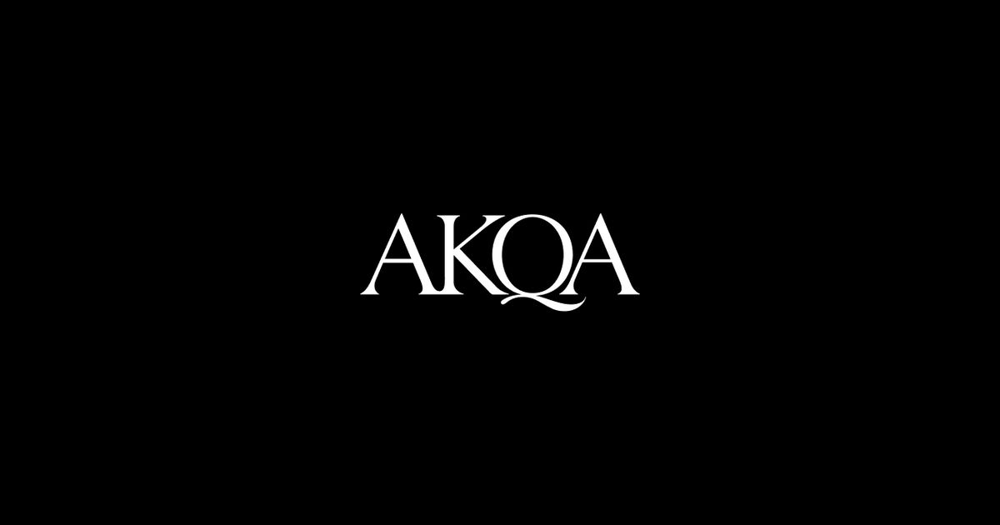
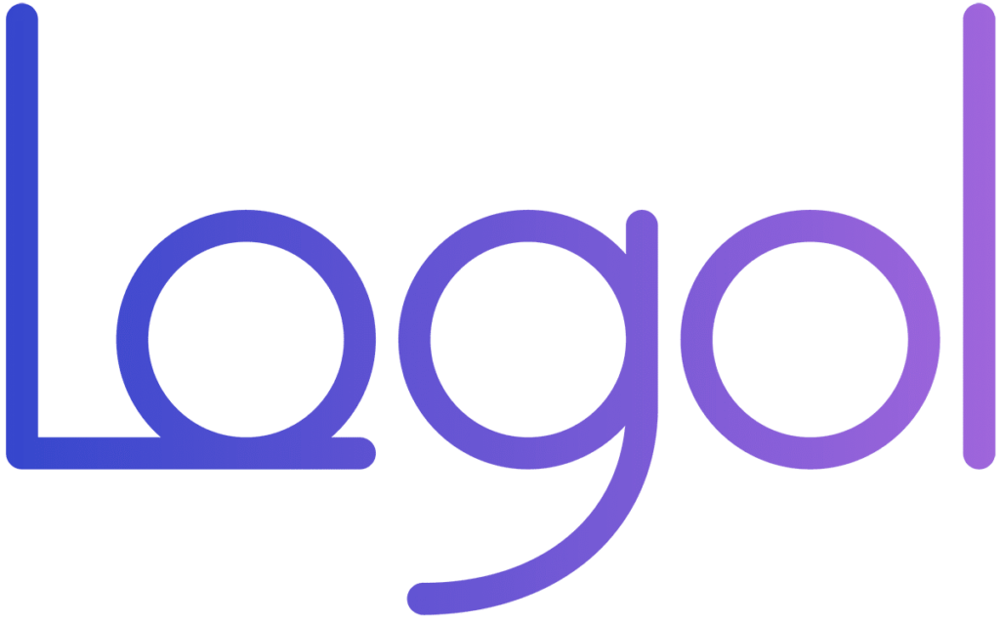

QA Strategy
QA processes, test planning, risk-based coverage, release readiness and quality ownership.
QA · TESTING · AUTOMATION
I’m Alice, a QA and Test Engineer focused on building reliable products, scalable QA processes and automation that supports teams as they grow.

EXPERTISE
I work across the full QA lifecycle, combining hands-on testing with process design, automation and product thinking.
QA processes, test planning, risk-based coverage, release readiness and quality ownership.
Functional, regression, E2E, integration, API, mobile and cross-browser testing.
Playwright and modern automation approaches that make quality faster and more repeatable.
UX-aware testing, accessibility, collaboration with product and engineering and continuous improvement.
QA APPROACH
My approach connects people, process and product so quality is visible throughout delivery.
Clarify the product, risks, users and acceptance criteria before testing starts.
Build focused test coverage around risk, user journeys and technical context.
Execute, investigate and communicate findings clearly across the team.
Turn what we learn into stronger processes, automation and product decisions.
QA LAB
A small Playwright suite built to validate the portfolio itself.
PLAYWRIGHT E2E
Run the full Playwright regression suite against the live portfolio.
RUN QA SUITE ↗WHAT I BRING TO QA
From defining the QA process to validating the final product.
I take responsibility for the quality process, not just individual test activities.
I turn testing into a clear, repeatable process that teams can rely on.
I continuously improve QA practices, from manual testing to automation.
EXPERIENCE
Quality Assurance SpecialistFULL QA OWNERSHIP
I currently own the entire QA function, defining processes and managing testing from internal validation through customer testing and release readiness.
Test EngineerQA OWNERSHIP
As the only Test Engineer until October 2025, I established the QA process from scratch and later onboarded three additional Test Engineers.
Quality Assurance SpecialistFULL QA OWNERSHIP
Joined as the agency's first QA Specialist, establishing QA foundations and owning quality across multiple clients and digital projects.
Quality Assurance SpecialistFULL QA OWNERSHIP
Worked as a focal point for testing, helping establish structured testing principles across banking, insurance and leasing projects.
Test SpecialistTEAM QA
Worked across system and regression testing, SQL, test documentation and defect management for an enterprise transformation project.
Software TesterQA OWNERSHIP
Built a foundation in software testing while collaborating with Front-End and Project Management and developing UX/UI skills.
SELECTED WORK
A few examples of how I approach quality, testing and automation.
Generali | Web · Mobile · International QA
View case study ↗ CASE STUDY 02
AKQA | QA · UX · Digital Product Quality
View case study ↗ CASE STUDY 03
Logol AG | AI · UAT · Playwright
View case study ↗PERSONAL PROJECTS
A small selection of websites and prototypes I built alongside my QA career.
A perfume-brand e-commerce prototype developed from UX/UI design through front-end implementation. You can visit the GitHub repository to explore the code.
Website developed for a family business, focused on services, contact information and practical local content.
EDUCATION
Master’s degree in Computer Engineering.
UX/UI and digital design studies.
LET’S CONNECT
Interested in QA, testing, automation or simply want to talk about quality and technology?